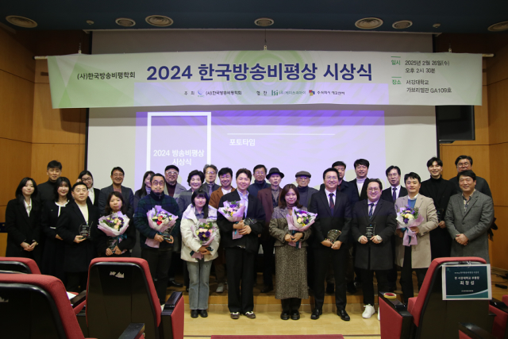
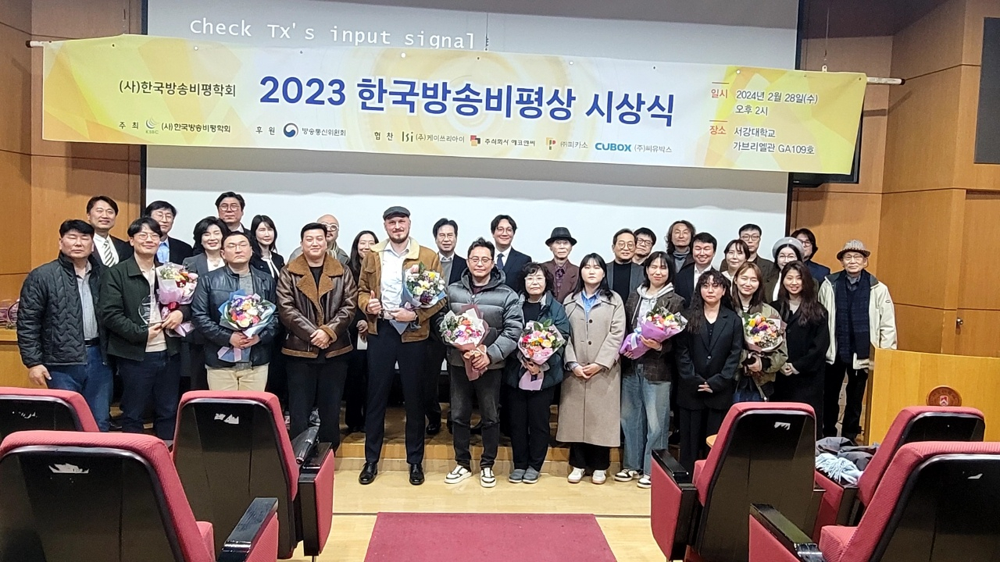
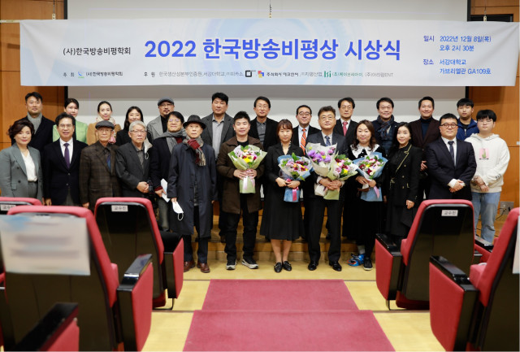
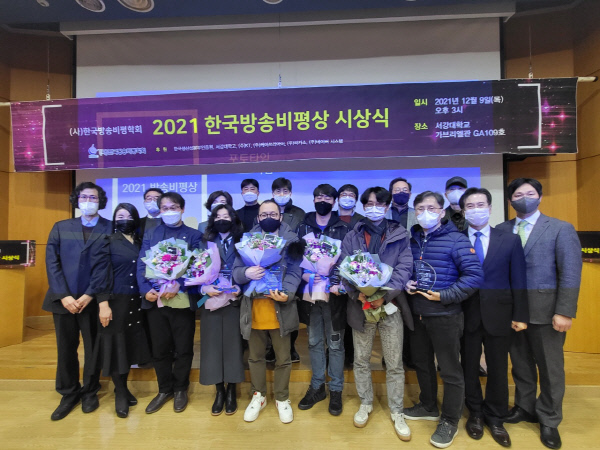

한국방송비평학회의 방송비평상은 2006년 제1회를 시작으로 매년 드라마, 라디오, 시사교양, 예능, 다큐멘터리, 소셜미디어 등 6개 부문에서 우수 프로그램을 선정해 시상하는 상입니다.
매년 2월 방송비평상 시상식이 개최됩니다.
서강대학교 가브리엘관 2025.02.26
| 장르 | 방송사 | 제목 |
|---|---|---|
| 드라마 | jTBC | 옥씨부인전 |
| 시사교양 | SBS | TV동물농장 |
| 예능 | 넷플릭스 | 흑백 요리사, 요리계급전쟁 |
| 다큐멘터리 | EBS | 돈의 얼굴 |
| 라디오 | MBC | 지역생존 프로젝트, 우리 고향 안녕하십니까? |
| 소셜미디어 | 유튜브 | 너진똑 NJT_BOOK |

서강대학교 가브리엘관 2024.02.28
| 장르 | 방송사 | 제목 |
|---|---|---|
| 드라마1 | MBC | 연인 |
| 드라마2 | 넷플릭스 | 정신병동에도 아침이 와요 |
| 시사교양 | tvN | 벌거벗은 세계사 |
| 예능 | jTBC | 최강야구 |
| 다큐멘터리 | SBS | 고래와 나 |
| 라디오 | KBS | FM 풍류마을 |
| 소셜미디어 | 유튜브 | iGoBart |

서강대학교 가브리엘관 2022.12.08
| 장르 | 방송사 | 제목 |
|---|---|---|
| 드라마 | jTBC | 나의 해방일지 |
| 시사교양 | EBS | 위대한 수업-그레이트 마인즈 |
| 예능 | tvN | 신박한 정리 |
| 다큐멘터리 | SBS | SBS스페셜, 국과수 |
| 라디오 | KBS | KBS무대 |
| 소셜미디어 | 서울시립 청소년미디어센터 | 스스로넷 |

서강대학교 가브리엘관 2021.12.09
| 장르 | 방송사 | 제목 |
|---|---|---|
| 드라마 | 넷플릭스 | 오징어게임 |
| 시사교양 | SBS | 꼬리에 꼬리를 무는 그날 이야기 |
| 예능 | tvN | 유 퀴즈 온 더 블록 |
| 다큐멘터리 | KBS | KBS대기획 키스 더 유니버스 |
| 라디오 | MBC | 이진우의 손에 잡히는 경제 |
| 소셜미디어 | 푸른나무재단 | 투게더 프로젝트 '장난과 폭력사이' |

뉴국제호텔 2018.12.17
| 장르 | 방송사 | 제목 |
|---|---|---|
| 드라마 | tvN | 미스터 선샤인 |
| 시사교양 | CBS라디오 | 시사자키 정관용입니다 |
| 예능 | KBS | 대국민 토크쇼 안녕하세요 |
| 다큐멘터리 | SBS | 일요특선다큐-천연물에 주목하라, 글로벌 신약 전쟁 |
| 모바일 | 네이버웹툰 | 씬커 |
코바코 대회의실(프레스센터 17층) 2017.12.17
| 장르 | 방송사 | 제목 |
|---|---|---|
| 드라마 | tvN | 비밀의 숲 |
| 다큐멘터리 | KBS | KBS 대기획 UHD 4부작 순례 |
| 시사교양 | KBS 1TV | 시사기획 창 |
| 예능 | MBC | 황금어장 라디오스타 |
| 모바일 | 대도서관TV | 60초-핵전쟁에서 살아남기 |
| 특별상 | KT SkyLife | — |
코바코 대회의실(프레스센터 17층) 2016.12.15
| 장르 | 방송사 | 제목 |
|---|---|---|
| 보도 | JTBC | 최순실 박 대통령 연설문 개입 특종 보도 |
| 다큐멘터리 | KBS 1TV | KBS스페셜-위대한 유산(4부작) |
| 웹툰 | 네이버 웹툰 | 마음의 소리 |
| 예능 | SBS | 미운 우리 새끼 |
| 드라마 | tvN | 디어 마이 프렌즈 |
| 특별상 | (주)딜라이브 | 서울 경기 케이블 TV |
서강대학교 가브리엘관 2015.12.16
| 장르 | 방송사 | 제목 |
|---|---|---|
| 보도 | JTBC | 뉴스룸-앵커 브리핑 |
| 다큐멘터리 | KBS 1TV | 끌려간 소녀들, 버마전선에서 사라지다 |
| 예능 | tvN | 삼시세끼 어촌편 |
| 예능 | MBC | 복면가왕 |
| 드라마 | SBS | 펀치 |
서강대학교 가브리엘관 2014.12.17
| 장르 | 방송사 | 제목 |
|---|---|---|
| 드라마 | KBS 2TV | 가족끼리 왜 이래 |
| 다큐멘터리 | EBS | 다큐프라임 '데스(Death)' 3부작 |
| 드라마 | tvN | 미생 |
| 다큐멘터리 | 대구MBC | 대한민국 독도 3D |
| 특별상 | 한국방송실연자협회 | 『한국TV드라마 50년사』 전2권 발간 |
| 특별상 | 홈초이스 | UHD 케이블TV 채널 '유맥스' 개국 |
서강대학교 가브리엘관 2013.12.18
| 장르 | 방송사 | 제목 |
|---|---|---|
| 라디오 | CBS 라디오 | 김현정의 뉴스쇼 |
| 보도 | KBS 탐사제작부 | 영훈국제중 부정입학 연속보도 |
| 보도 | YTN 정치부 | 한국행 희망 탈북 청소년 9명 라오스에서 추방 |
| 보도 | 광주MBC 취재부 | 수사기관 개인정보 무단조회 이대로 좋은가? |
서강대학교 가브리엘관 2012.12.12
| 장르 | 방송사 | 제목 |
|---|---|---|
| 지상파 | KBS 2 | 넝쿨째 굴러온 당신 |
| 드라마 | tvN | 응답하라 1997 |
| 라디오 | 국악FM방송 | 행복한 문학 |
서강대학교 가브리엘관 2011.12.12
| 장르 | 방송사 | 제목 |
|---|---|---|
| 예능 | KBS | 해피선데이 '남자의 자격' 청춘합창단 |
| 시사교양 | MBC 플러스미디어 | 스틸루트 |
| 시사교양 | EBS | 세계테마기행 |
서강대학교 가브리엘관 2010.12.15
| 장르 | 방송사 | 제목 |
|---|---|---|
| 예능 | KBS 1TV | 콘서트 7080 |
서강대학교 가브리엘관 2009.12.23
| 장르 | 방송사 | 제목 |
|---|---|---|
| 다큐멘터리 | KBS 1TV | 다큐멘터리 3일 |
| 다큐멘터리 | SBS | 자연으로 돌아간 반달곰 |
서강대학교 가브리엘관 2008.12.19
| 장르 | 방송사 | 제목 |
|---|---|---|
| 드라마 | MBC | 이산 |
| 시사교양 | EBS | 한반도의 공룡 |
| 예능 | SBS | 일요일이 좋다 |
방송회관 3층 회의장 2007.12.20
| 장르 | 방송사 | 제목 |
|---|---|---|
| 드라마 | KBS 1 | 대조영 |
| 시사교양 | KBS 1 | 이영돈 PD의 소비자고발 |
| 예능 | MBC | 거침없이 하이킥 |
| 케이블·위성 | CGV | 8일 |
한국방송회관 3층 세미나실 2006.11.30
| 장르 | 방송사 | 제목 |
|---|---|---|
| 지상파 | SBS | 긴급출동 SOS |
| 케이블·위성 | YTN | 돌발영상 |
| DMB | 한국DMB | 심심탈출 명랑고교 |